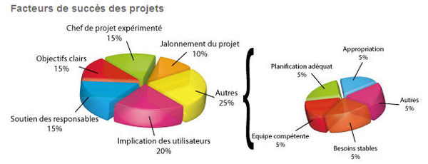

Définition et Rôle

est la personne chargée de mener un projet et de gérer son bon déroulement. De manière générale, il anime une équipe pendant la durée du ou des divers projets dont il a la charge. Ce rôle fait appel à des compétences de gestion de projet, de bonnes capacités relationnelles, ainsi que des connaissances techniques dans les domaines concernés.
Facteurs de succès
 Il s'avère que les principaux facteurs de succès sont liés au chef de projet. Il est chargé : - De structurer le projet pour arriver à une date clé par trimestre (en moyenne) de façon à fédérer les équipes sur un objectif court terme, - D'assurer la communication avec les dirigeants pour les maintenir dans la boucle et obtenir sur la longueur leur soutien, - De travailler avec le sponsor pour faire clarifier et formaliser les objectifs,
Taux de succès projets
Le taux de succès des projets est peu communiqué. Parmi les sources disponibles on peut citer les études du Standish Group publiées dans le "Chaos report" mais qui ne concernent que des projets informatiques